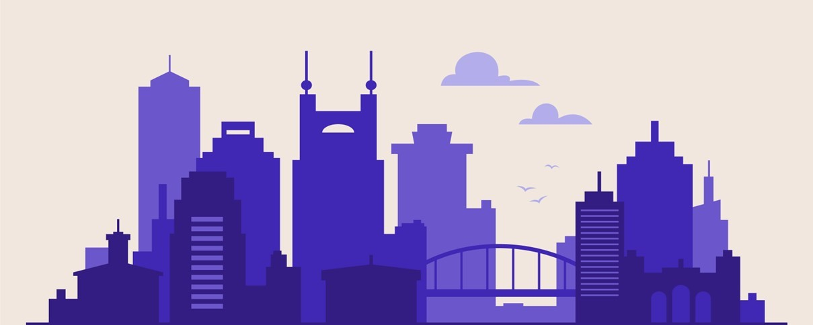

In collaboration with a small company called MegaBliss Worldwide, I developed a dynamic web application using Next.js, Tailwind CSS, and Java. This project showcases my ability to integrate modern front-end technologies with robust back-end development, delivering a seamless user experience.

A comprehensive data cleaning project utilizing SQL to transform and sanitize large datasets. This project showcases my ability to write complex queries, normalize data, and ensure data integrity, making it ready for analysis and reporting.
SHARC_Runners
Game Development

SHARC_Runners is a collaborative 2D multiplayer platformer racing game, designed in Unity and developed using C#. Created as part of a team, this project demonstrates my ability to work in a collaborative environment, contributing to engaging gameplay mechanics and multiplayer functionality.
A simple yet engaging GUI-based Tic-Tac-Toe game built using HTML. This project demonstrates my skills in designing intuitive interfaces and implementing game logic, providing a fun experience for two players on the same device.

SEPER-APP is a tool designed to help developers make informed decisions by providing easy access to evidence-based practices derived from academic research. This project highlights my ability to bridge the gap between academic knowledge and practical application, making critical information more accessible to software engineers.